Docker Swarm on Rocky Linux project _ via theNewStack
Link to theNewStack Article
What is needed in this project
- 2 instances of Rocky Linux; and 1 user with sudo privilege
- Install dependencies on both OSs; Install Docker on both Rocky instances
- Open the Firewalls; Reload the Firewalls
- Initialize the Swarm
- Test the Node
Create Rocky Linux Instances in Hyper-V
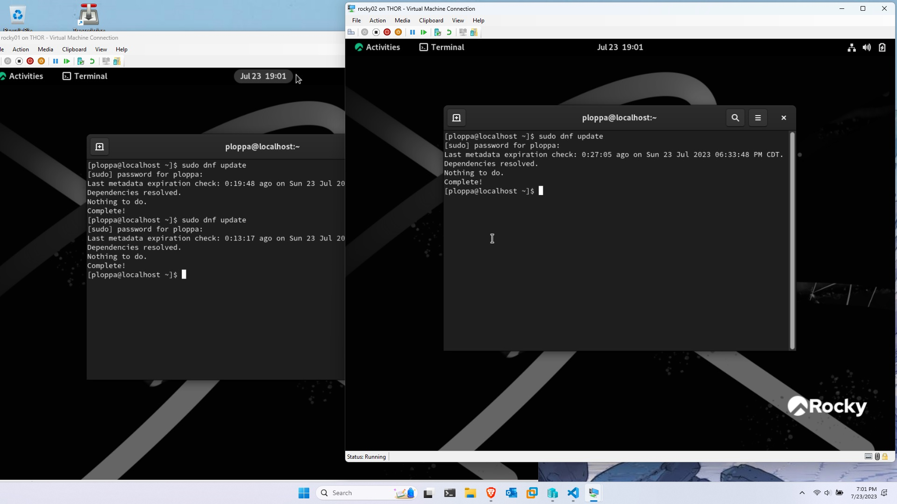
2 Rocky Linux instances installed - success
Install dependencies on both OSs - Install Docker on both Rocky instances
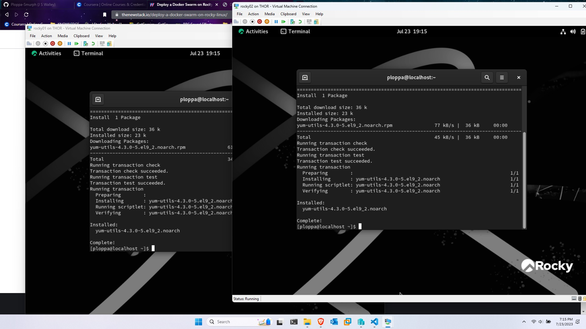
Rocky Linux 'dnfutils' installed - success
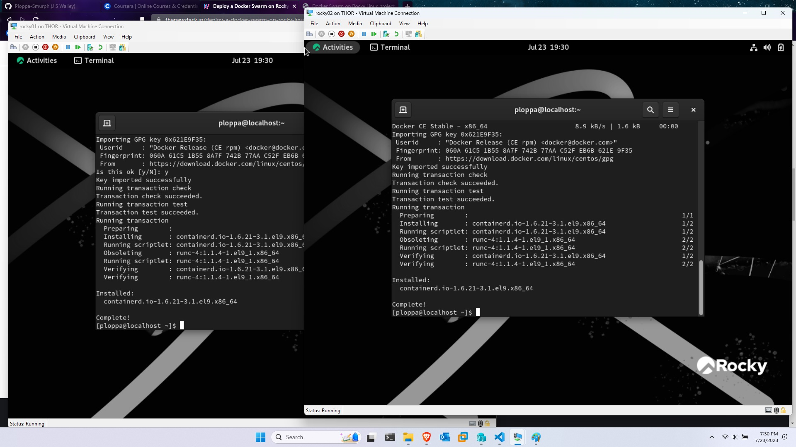
Docker Install and updated - success
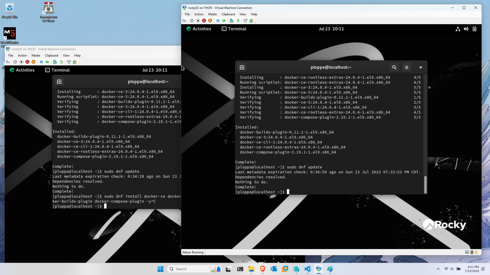
Docker Swarm Dependencies installed
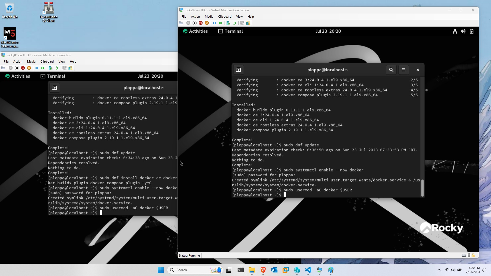
Open the Firewalls; Reload the Firewalls
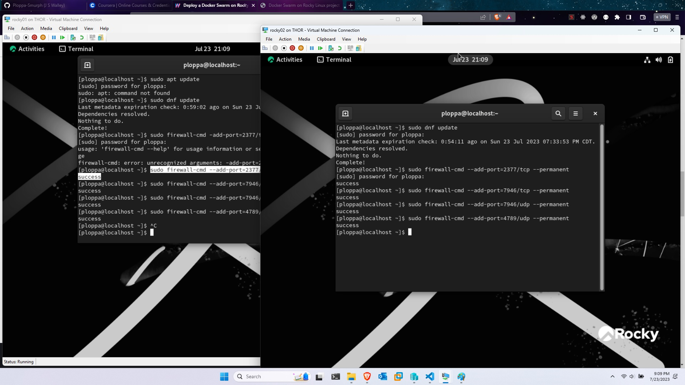
Firewall Allowances made
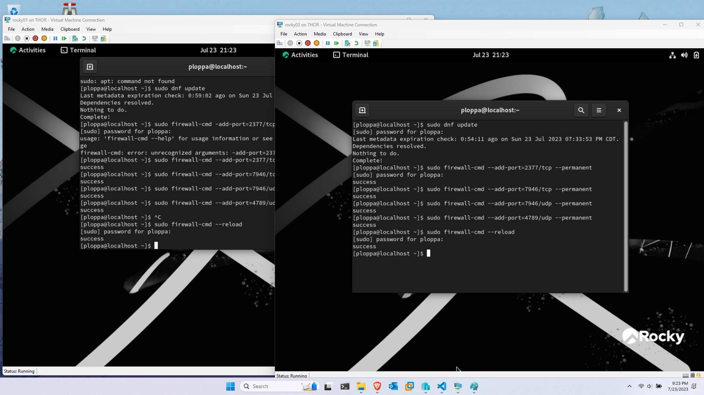
Initialized Swarm on Rocky02
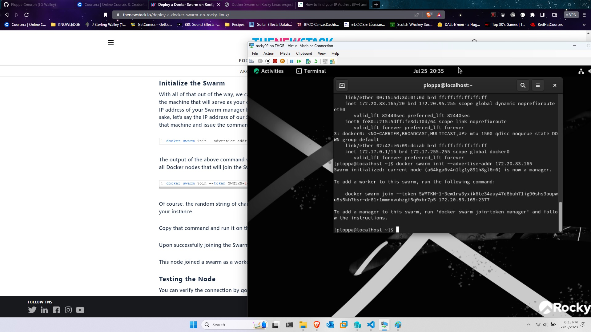
Rocky joins swarm as worker
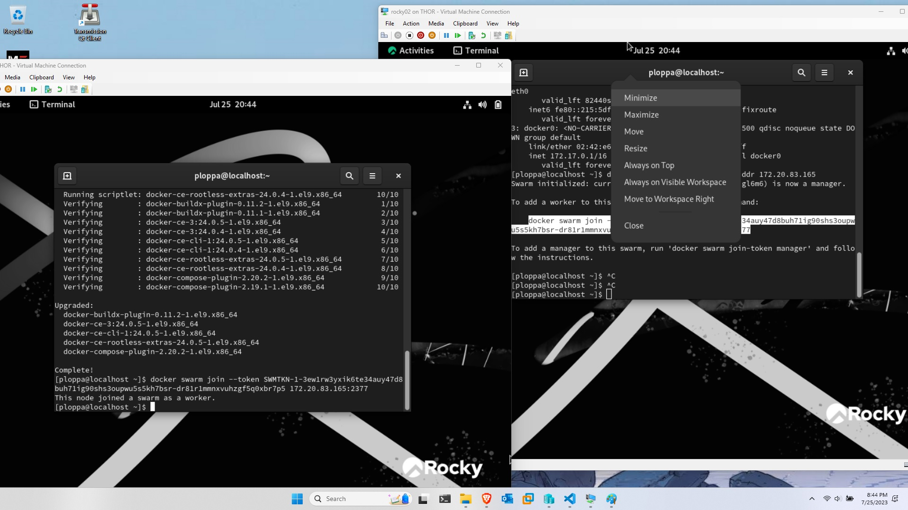
Docker Swarm info
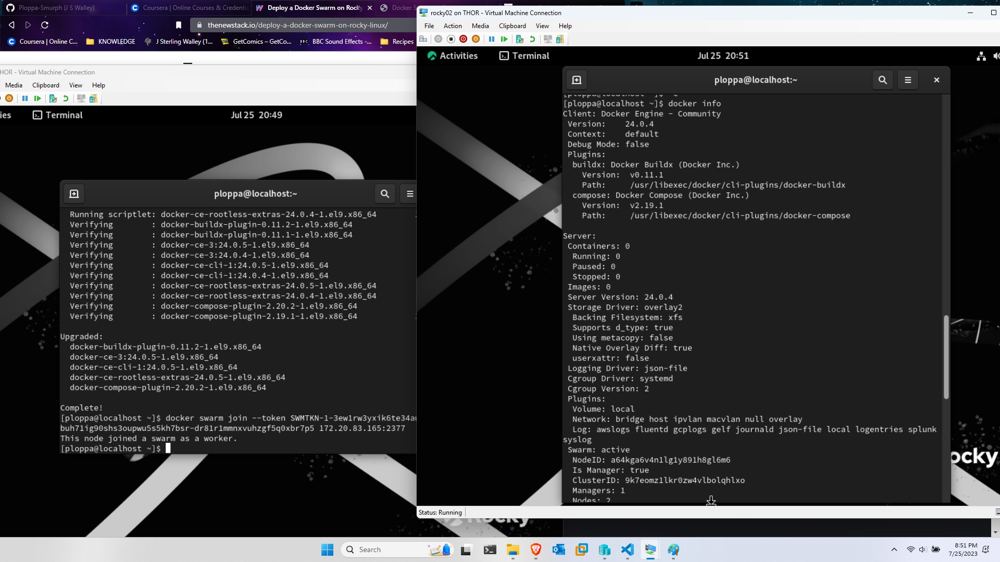
NGINX service started on control swarm
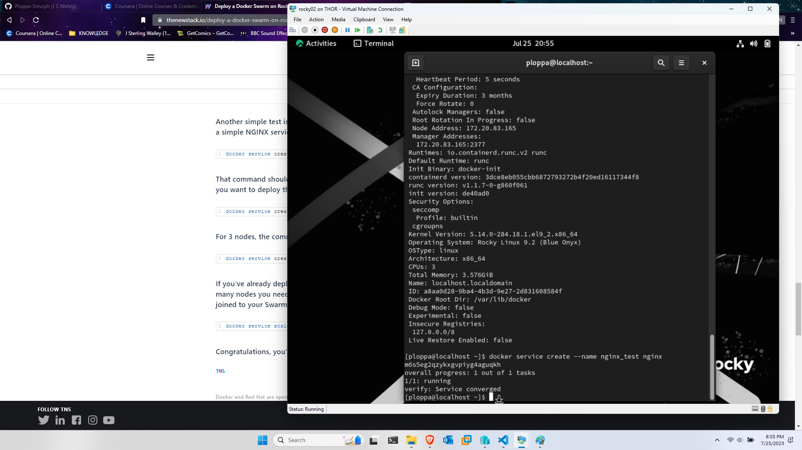
2nd NGINX service started on control
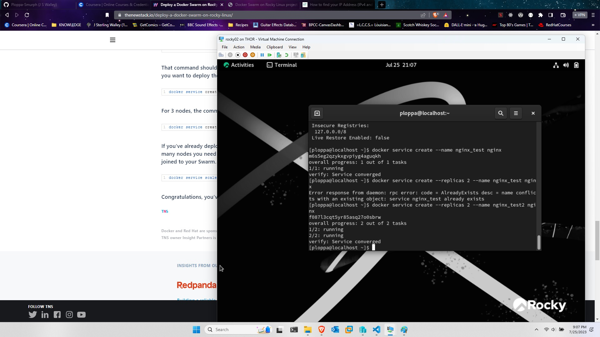
3rd NGINX service started on control
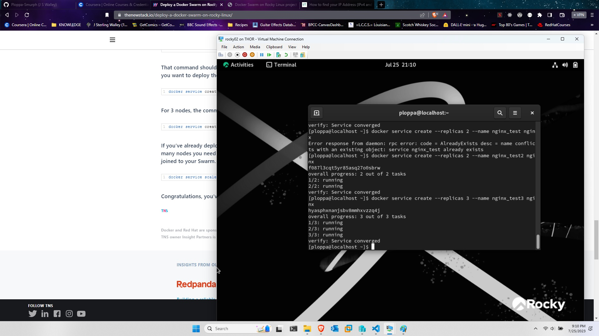
can deploy 5 or more and scale as needed (after first service is running)
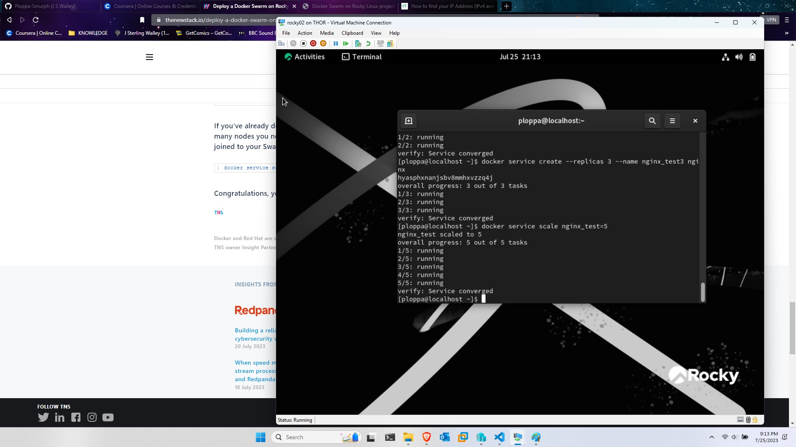